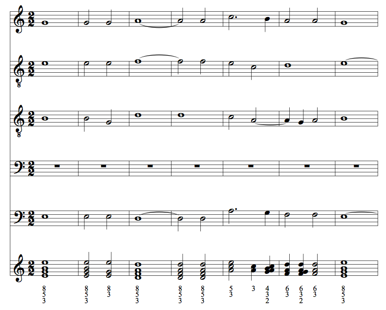

Examples and Demonstrations¶
The following examples provide a few samples of some of the possibilities available when working with music21.
Creating a Reduction and Labeling Intervals¶
This example, after parsing a polyphonic work stored as an Opus and creating a Score, presents and labels the intervals of the resultant chords of all distinct harmonies.
>>> from music21 import corpus
>>> # Parse an Opus, a collection of Scores
>>> o = corpus.parse('josquin/laDeplorationDeLaMorteDeJohannesOckeghem')
>>> # Create a Score from a Measure range
>>> sExcerpt = o.mergeScores().measures(126, 134)
>>> # Create a reduction of Chords
>>> reduction = sExcerpt.chordify()
>>> # Iterate over the Chords and prepare presentation
>>> for c in reduction.flat.getElementsByClass('Chord'):
... c.closedPosition(forceOctave=4, inPlace=True)
... c.annotateIntervals()
...
>>> # Add the reduction and display the results
>>> sExcerpt.insert(0, reduction)
>>> sExcerpt.show()
(Note that this example shows some octaves retained...this has been fixed in newer releases) TODO: Fix example
{kind=link}
Searching a Large Collection of Works for Ultimate Chord Quality¶
This example search the entire collection of Bach Chorales stored in the corpus for works that, while in a minor key, end on a minor triad (as opposed to with the more common raised Picardy third).
>>> from music21 import *
>>> # Create storage for the results
>>> results = stream.Stream()
>>> # Get file paths to all Chorales
>>> for chorale in corpus.chorales.Iterator():
... keyObj = chorale.analyze('key')
... # Select minor-mode chorales
... if keyObj.mode == 'minor':
... # Gather last pitches from all parts into a Chord
... lastChordPitches = []
... for part in chorale.parts:
... lastChordPitches.append(part.flat.pitches[-1])
... cLast = chord.Chord(lastChordPitches)
... cLast.duration.type = "whole"
... cLast.transpose("P8", inPlace=True)
... # If a minor triad, append to results with annotations
... if cLast.isMinorTriad() or cLast.isIncompleteMinorTriad():
... cLast.lyric = chorale.metadata.title
... m = stream.Measure()
... m.keySignature = chorale.flat.getElementsByClass(
... 'KeySignature')[0]
... m.append(cLast)
... results.append(m.makeAccidentals(inPlace=True))
...
>>> results.show()
{kind=link}
Searching the Corpus by Locale¶
This example searches all works in the corpus from two regions in China for the count and percentage of melodic sevenths. These works come from the Essen Folksong database, indexed and stored in the music21 corpus.
>>> from music21 import *
>>> # Get an analysis tool
>>> mid = analysis.discrete.MelodicIntervalDiversity()
>>> results = []
>>> # Iterate over two regions
>>> for region in ['shanxi', 'fujian']:
... # Create storage units
... intervalDict = {}
... workCount = 0
... intervalCount = 0
... seventhCount = 0
... # Perform a location search on the corpus and iterate over
... # resulting file name and work number
... for result in corpus.search(region, field='locale'):
... workCount += 1
... # Parse the work and create a dictionary of intervals
... s = result.parse()
... intervalDict = mid.countMelodicIntervals(s, found=intervalDict)
... # Iterate through all intervals, and count totals and sevenths
... for label in intervalDict.keys():
... intervalCount += intervalDict[label][1]
... if label in ['m7', 'M7']:
... seventhCount += intervalDict[label][1]
... # Calculate a percentage and store results
... pcentSevenths = round((seventhCount / float(intervalCount) * 100), 4)
... results.append((region, pcentSevenths, intervalCount, workCount))
...
>>> # Print results
>>> for region, pcentSevenths, intervalCount, workCount in results:
... print('locale: {}: found {} percent melodic sevenths, '
... 'out of {} intervals in {} works'.format(
... region, pcentSevenths, intervalCount, workCount))
...
locale: shanxi: found 3.1994 percent melodic sevenths, out of 4282 intervals in 77 works
locale: fujian: found 0.7654 percent melodic sevenths, out of 2613 intervals in 53 works
Finding Chords by Root and Collecting their Successors¶
This example creates a chordal reduction of a polyphonic work and then searches for all Chords that have a specific root. This chord, along with its successor, is then collected and displayed.
>>> from music21 import *
>>> # Parse a work from the corpus
>>> s = corpus.parse('bwv66.6')
>>> # Reduce the work to a series of simultaneities, then extract only
>>> # the resultant Chords
>>> chords = s.chordify().flat.getElementsByClass('Chord')
>>> # Create a Stream for display
>>> display = stream.Stream()
>>> # Iterate through the chords by index and a Chord
>>> for i, c1 in enumerate(chords):
... # Get the next Chord, or a Rest
... if i < len(chords) - 1:
... c2 = chords[i+1]
... else:
... c2 = note.Rest()
... # If the root of the Chord is A, collect and display this Chord
... # and the next Chord (the last bit eliminates some passing 9th chords that can
... # be analyzed as having an A root)
... if c1.findRoot().name == 'A' and (c1.isTriad() is True or c1.isSeventh() is True):
... m = stream.Measure()
... m.append(c1)
... m.append(c2)
... display.append(m)
...
>>> display.show()
{kind=link}
Pitch and Duration Transformations¶
This example creates a mensural canon from the Soprano part of a Bach chorale.
The procedure extracts the Note objects from the parsed
Score object, using the parse()
function and the getElementById() method. Then, a
new part Stream is created by first scaling the timing and duration of events
with the augmentOrDiminish() method and then
transposing the pitches with the transpose()
method. The modified Stream is then inserted into another Stream and displayed
with the show() method.
>>> from music21 import *
>>> src = corpus.parse('bach/bwv323.xml')
>>> ex = src.getElementById('Soprano').flat.notesAndRests
>>>
>>> s = stream.Score()
>>> for scalar, t in [(1, 'p1'), (2, 'p-5'), (.5, 'p-11'), (1.5, -24)]:
... part = ex.augmentOrDiminish(scalar, inPlace=False)
... part.transpose(t, inPlace=True)
... s.insert(0, part)
>>> s.show()
{kind=link}
Basic Counting of and Searching for Musical Elements¶
Here, we load a file and count the number of G#’s in it.
- Here, we load a file and count the number of G#’s in it.
>>> from music21 import *
>>> s = corpus.parse("bach/bwv30.6")
>>> # The `pitches` property will get all Pitch objects from all contained
>>> # Streams and Stream subclasses recursively
>>> total = 0
>>> for p in s.pitches:
... if p.name == 'G#':
... total += 1
>>> print(total)
28
- This example searches a Part for a particular chord formation, a dominant seventh, expressed melodically.
>>> from music21 import *
>>> # First, we parse the score and get just the Violin part
>>> op133 = corpus.parse('beethoven/opus133.xml')
>>> violin2 = op133.getElementById('2nd Violin')
>>> # An empty container is created for later display
>>> display = stream.Stream()
>>> # We iterate over each measure
>>> for m in violin2.getElementsByClass('Measure'):
... # We get a list of consecutive notes, skipping unisons, octaves,
... # and rests
... notes = m.findConsecutiveNotes(skipUnisons=True, skipOctaves=True, skipRests=True, noNone=True)
... # From this collection of Notes we gather all Pitches
... pitches = stream.Stream(notes).pitches
... # Taking four Pitches at a time, we create Chords
... for i in range(len(pitches) - 3):
... c = chord.Chord(pitches[i:i+4])
... c.duration.type = "whole"
... # We test to see if this Chord is a Dominant seventh
... if c.isDominantSeventh():
... # We label the Chord and the first Note of the Measure
... c.lyric = "m. " + str(m.number)
... primeForm = chord.Chord(m.pitches).primeFormString
... firstNote = m.notesAndRests[0]
... firstNote.lyric = primeForm
... # The chord (in closed position) and the Measures are
... # appended for display
... mChord = stream.Measure()
... mChord.append(c.closedPosition())
... display.append(mChord)
... display.append(m)
...
>>> display.show()
{kind=link}